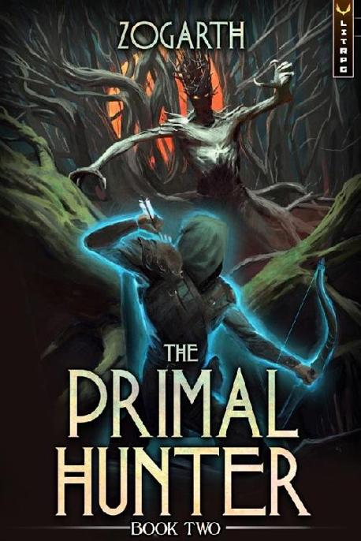

First quest & Venomfang
A s the Den Mother died, Jake felt like he had finally gotten out many of his frustrations. However, the feeling of relief was short-lived, as his entire body started aching only mere moments later. He had pushed himself to the limit, perhaps even above limits he didn’t know he had.
His stamina was nearly depleted after only one fight. His mana had also taken quite the hit, since he had used more than a few Infused Powershots.
This fight was likely the first time Jake had ever fully realized his body’s potential.
Experiencing a doubling in physical stats in only a few days had done much to increase his combat strength.
And the results spoke for themselves. Jake had won a convincing victory with the odds more than stacked against him.
Deciding to go through his notifications, he first saw that the three Alphas had all been below level 70. Which meant they were indeed all weaker than any of the other Alphas he had met so far. Nevertheless, the three had still awarded a level as the last one fell, making him level up both his class and race during the fight.
Apparently, he had been too focused to even notice. But he did notice the level he got when the Den Mother died. And speaking of the Den Mother…
*You have slain [Den Mother – lvl 82] – Bonus experience earned for killing an enemy above your level. 124,000 TP earned*
*’DING!’ Class: [Ambitious Hunter] has reached level 46 - Stat points allocated, +4 Free Points*
The Den Mother had been level 82, and not just an average level 82, but clearly a potent variant. Only from what he had seen, the beast could wipe out any group of five he had met so far. And by a large margin.
The first blast of poisonous gas alone would likely have killed most. Without Jake’s high resistance from Palate of the Malefic Viper, he would probably have suffered a lot too. And even with the skill, he had still taken damage.
Overall, the Den Mother had been strong. Strong, but exceptionally poorly matched up against Jake. He’d countered most of what it did.
He did wonder a bit about its name, though. How had it come to be called Den Mother? He doubted it was the name of its race, as he was pretty sure many animals out there in the vast multiverse had what one could call a den mother. Likely it was just something to do with the dungeon, but of course, he had no way to be sure.
Moving down the list of notifications, he saw it was far from done. The next ones informed Jake of him successfully clearing the dungeon.
Congratulations! You have cleared Tutorial Dungeon: Badger’s Den
Objective: Defeat the Den Mother (Completed)
Bonus reward for clearing the dungeon solo.
Dungeon shutting down in: 00:57:29
He was a bit happy to see that clearing the dungeon solo provided a bonus. He didn’t see any treasure chests anywhere, but perhaps they were in the tunnel behind where the Den Mother had died.
A pleasant, though not unexpected, surprise was also the upgrade of two of his titles, meaning they weren’t new titles but changes to his existing ones.
[Dungeoneer II] – Successfully clear a Dungeon suitable for your level. +2 all stats.
[Dungeon Pioneer II] – Be the first to clear a dungeon suitable for your level. +6 all stats.
Both had doubled in value, rewarding him an increase of 4 points in all stats from the upgraded titles. It didn’t seem like much, but it was equivalent to two entire race levels, or 36 stat points totals. Not a measly sum at all.
It did make him wonder how high the titles went, though. He seriously doubted they doubled every time, as that would quickly escalate to the level of ridiculousness.
Or maybe the most powerful being in the entire multiverse was indeed the mighty Dungeon Pioneer 25, with his or her +50,331,648 to all stats.
All jokes aside, even if the title only added +3 to all stats per level, it was still a very significant bonus. Jake believed that there had to be a limit, and if not, was everyone in the entire multiverse just farming dungeons all day, every day, to get titles?
Oh well, something to ask the Viper about next time, he thought to himself.
Anyway, the titles were excellent and all, but the main thing was the very last message Jake received. Or, more accurately, the quest he received.
You have been granted the Tutorial Quest: The Beast Lords.
The forest murmurs with rumors of a King ruling from the shadows. The four Beast Lords each guard their dungeon as their King commanded, waiting for a suitable challenger to appear. With the death of his lords, the King is sure to be forced into the light. But be warned, the Lords will not meet their end that easily.
Objective: Defeat the Beast Lords.
Current progress: 1/4
The first thing was, of course, a realization that quests existed. Of course they do. The system had already proven itself to love a whole slew of game elements, so quests also being a thing was entirely unsurprising.
As for the contents of the quest, that too was very interesting. Jake remembered the initial tutorial message from when they’d entered, mentioning something about the Beast Lords or whatever.
Quite honestly, he hadn’t paid much attention to it at the time. He had been a bit busy with his entire life and reality itself being flipped upside down. You know, the usual stuff.
Of course, before he could meet this fabled King, he would have to kill the four lords. Very fantasy-esque.
It didn’t take him long to piece things together. The inner area had five mountains, with four of them surrounding one colossal mountain in the middle. The dungeon he was in currently had been found at the top of the first one, making it somewhat reasonable to expect the other dungeons to be placed inside the other mountains.
But all of that was for when he got out of here. For now, he still had loot to get to—the first piece perhaps being right in front of him on the badger itself.
His Sense of the Malefic Viper kept giving off a strong reaction even after the Den Mother died. Whenever the badgers, including the Alphas, died, the poison on their claws and fangs lost all their effect. Without the supply of energy from the body, the venom couldn’t keep up its toxicity.
But the feeling still had yet to subside from the Den Mother, making it quite apparent that something highly toxic was still within it.
He didn’t really want to, but he got out his sword and went toward the corpse of the beast. It felt disrespectful to cut it up. But then again, using the natural materials found on an animal was often seen as a sign of respect in many cultures. Yeah, that is a good excuse, he thought to himself.
Cutting the hide was far easier now that the beast was dead. It was still strong, but far more manageable. He cut toward the source of the toxin, finally managing to move the innards out the way and see what it was.
It was a small bag-like thing. It was integrated into the beast’s stomach area by many small tendrils going into the flesh. He didn’t hesitate as he cut it out, making sure to not spill anything of what was within. Feeling like a plastic bag filled with water, it made squelching sounds as he took it out. It was disgusting, to say the least.
It took him a good twenty minutes to get it out, as he had to walk away several times to get a breath. Not because he lacked air; he just lacked not horrendously smelling air. One had to remember that the Den Mother was several times larger than himself, forcing him to quite literally step into the body of the beast to get it out.
Finally, having the squishy flesh-bag on the ground, he used Identify on it.
[Den Mother’s Poison Gland (Rare)] – A gland containing a highly concentrated toxic liquid, condensed by the Den Mother over a long period.
At least it was worth it, Jake thought to himself as he smiled a bit. One part of the smile was due to the item, and another was due to him seeing a new challenge before him. A rare poison to create something new with. Perhaps his first real creation above common rarity.
Taking out a piece of cloth from his bag, he bundled up the gland and put it in his necklace. The thing was big, weighing a few kilograms easily, which meant that it likely contained liters of highly toxic liquid. Oh, the things he would make with it.
Nodding toward the corpse of the Den Mother one last time in acknowledgment, he went toward the exit of the cavern. Where he, of course, found himself in another tunnel. Because why wouldn’t there be another tunnel?
Luckily, this one was short, as he soon found that the tunnel broadened. Before Jake even turned the corner, he already saw the two black holes in his Sphere of Perception. Lockboxes.
He walked over to them with a smile, a bit giddy to see what would be rewarded. One of the boxes was small and rectangular, while the other was slightly bigger but relatively flat.
What mattered more, however, was the rarity. The rectangular one was rare, and the other one uncommon.
Jake wasn’t overly excited or surprised by this. Perhaps a little disappointed, even. After clearing the Challenge Dungeon, he had gotten an epic along with a rare item. Then again, this dungeon had been far faster, and in many ways, easier.
Not saving the best for last, he first opened the rare box.
Inside was a small weapon. At first, he thought it was a spike or something, but looking closer, one could see it was actually a carved tooth. Or a fang, to be more accurate. It had a simple-looking handle and a slightly curved blade, and, from its looks, seemed more suitable for stabbing than cutting. Using Identify, he got a good look at its specs.
[Venomfang (Rare)] – The fang of the Den Mother still carries substantial remnants of its condensed Records, granting this weapon strength akin to when the beast still lived. The fang itself has taken shape resembling a shiv, fit to be wielded by the humanoid races. Enchantments: Venomfang.
Requirements: Lvl 45+ in any humanoid race.
The whole thing was relatively simple. The dagger only seemed to have one single function: poisoning. It seriously made him think precisely how much the system tailored these lockboxes to the receivers.
He needed a second weapon to go with his sword, and the system gave him one. It was even made of bone, making his Twin-Fang Style work. Heck, his skill was called Twin Fang, and he had just gotten a goddamn fang.
With it even being enchanted with venom also made it all the more suspicious, though Jake had yet to find out if the poison even worked with his concocted ones, and more importantly if his skills had synergy with the enchantment.
Either way, the weapon was a great addition to his repertoire.
Which led him to the next lockbox.
Opening it up, he found a black cloth of some kind. Taking it out, he noticed that it was pants that were very smooth, almost silk-like, but looking closer, he could see that it was actually woven out of a multitude of small pieces of hair. Or fur, to be more accurate.
On the inside, the pants had something resembling leather. It, too, had little padding, making the pants look incredibly comfortable.
Identifying the pants, it quickly became apparent what it was made of.
[Alpha Venomfang Badger Pants (Uncommon)] – Pants made from the hide of an Alpha Venomfang Badger. The hide is refined and comfortable, granting high resistance to slashing and corrosive attacks. Enchantments: Self-Repair. +25 Endurance, +25 Agility. Grants the ability: [Badger Jump (Common)].
Requirements: Lvl 40+ in any humanoid race
Another badger-themed piece of equipment. Not entirely unsurprising, considering the entire dungeon had consisted solely of badgers. The stats on them were higher than anything else Jake had encountered so far in this tutorial. But then again, so was the level requirement.
And talking of the levels, it was also slightly suspicious that all the items he found he could use right away, or he was extremely close to being able to. One would think that a dungeon with a level 80+ final boss would drop items better than level 40. Again, it was likely that the loot was designed for whoever cleared the dungeon.
Interestingly, these pants also provided an ability. This was Jake’s first time encountering such a phenomenon, and it was quite interesting to see how it worked. As for the ability itself… well, it was rather basic, to say the least.
[Badger Jump (Common)] – Make a jump empowered with the power of a badger, increases jump height and speed. Adds a minor increase to the effect of Badger Jump based on Agility.
Having no reason to delay, he bound the pants to himself and put them on. The first thing he noticed was how comfortable they were. This was also the first piece of gear where he truly experienced the system’s ability to “fit” it to his body.
The waist shrank in to sit perfectly on him, while the legs got slightly less baggy after putting them on and binding them to him. The pants in their entirety took on a sleeker look. He didn’t know if it was somehow linked to the Self-Repair enchantment or if it was just something the system did by itself.
His boots had also fit perfectly the first time he put them on. But that could just be brushed up to luck, as he hadn’t noticed them changing in any way. The pants, however, had clearly gotten smaller overall.
He also tried to use the skill.
When he used it, it simply increased his leg strength slightly while jumping. He found that it worked best when jumping sideways, compared to up and down. And even better if he did a jump from being down on all fours… though he didn’t plan on using that part very often, if at all.
Eventually, he found it most comfortable to just slightly lean in a direction and then take off. The more horizontal his body was, the more effective the skill was. Perhaps to emulate a badger, as they were usually on all fours.
Feeling a bit experimental, he tried taking off the pants again and found his ability to use Badger Jump gone. He could remember how he did it, but it just didn’t work whenever he attempted to. The stats did remain, though, so that was a bit weird, and after putting the pants back on, the skill worked just like before.
A bit sad that farming equipment wasn’t a way to permanently gain a plethora of new skills, he made his way toward the dungeon’s exit.
Finally, after all this time, he looked a bit less like a hobo. Or maybe just a hobo with nice pants. Either way, he felt pretty good about his gains from the dungeon as he walked out the eerie-looking doorway that marked the dungeon’s exit, his next target already in mind.
The Primal Hunter continues in Book 2.
